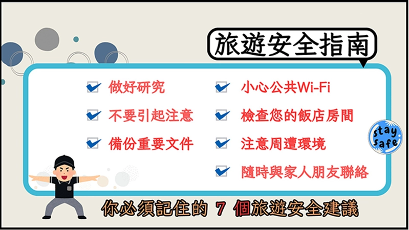

account_balance旅遊安全宣導專區
出發前務必做好研究，詳細了解您的目的地。也請先上外交部網站查詢國外旅遊警示分級表，了解國家資訊文化禁忌和必須遵守的法律規定最重要的是備妥所有聯絡資訊。當地警察局：發生犯罪或緊急安全問題時聯絡。銀行資訊：緊急用錢、遺失信用卡或遇到金融詐騙時使用。保險公司：在發生意外時，需要醫療援助或行李丟失時提供支援。如果是參加旅行社的旅遊規劃，在出發前需詳細了解您的目的地，一定要先上外交部網站查詢外交部旅外國人緊急服務專線，請先輸入手機備存以防不時之需，電話號碼+886-800-085-095。記得需再增加導遊以及旅行社的聯絡資訊，若參加團體或自由行旅遊，建議依自身需求投保旅遊平安險，讓您旅遊安全更有保障。

account_balance行李安全注意事項
- 隨身攜帶貴重物品：
無論是搭乘遊覽車、火車或暫時寄放行李，錢包、手機、證件、相機與行動電源等貴重或含有鋰電池的物品，務必放入隨身小包，絕不放置於大件託運行李或無人看管的遊覽車車廂內，以免遭竊或因碰撞損壞。旅遊常發生行李箱誤拿的情形，建議在行李把手上繫上鮮豔的絲帶、姓名吊牌。
- 視線範圍內的保管： 在飯店大廳辦理入住、退房，行李應盡量保持在視線範圍內，或由同行親友輪流看顧。切勿因身處熟悉的國內環境而放鬆警戒，將包包隨意放置於椅背或地上。若使用飯店提供的行李運送服務，務必在掛牌上清楚填寫姓名與聯絡電話，貼上獨特的貼紙作為記號。並在出發前確認件數。
為了愉快安心旅遊，但行李遺失或誤拿的情況仍時有所聞。請務必留意以下行李保管原則：
account_balance搭乘遊覽車安全注意事項
- 全程繫妥安全帶：
根據法規與安全數據，安全帶是發生意外時的保命關鍵。一旦上車入座後，請務必第一時間繫好安全帶，直至車輛完全停妥。切勿因為想與鄰座聊天或睡覺感到拘束而自行解開，亦不可躺臥在座椅上，以免煞車時滑落受傷。
- 車輛行進間請勿移動：
當遊覽車在行駛過程中，請勿在走道上隨意走動、站立或更換座位。若有如廁需求，建議等待車輛進入休息站停妥後再行動；若車內設有廁所，使用時務必握緊扶手，避免因車輛轉彎或緊急煞車導致跌倒碰撞。
- 確認逃生設備位置： 旅客上遊覽車後，請花一分鐘確認緊急出口（安全門）、車窗擊破器（通常位於窗框旁）及滅火器的位置，並細閱椅背後的逃生解說圖或是影音播放解說。這是發生緊急事故時的黃金逃生資訊。
遊覽車是團體旅遊最主要的交通工具，為了保障全車乘客的生命安全，請嚴格遵守以下乘車規範：